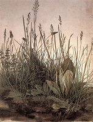
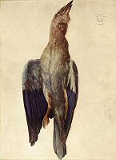

|
WEIHER IM WALD (1496)
Aquarell, 262 x 374 mm
Britisches Museum, London
∆
Kommentar
Diese Landschaft gilt als eine der schönsten Naturdarstellungen, die das Malergenie mit einer Bürste, Wasser und natürlichen Pigmenten geschaffen hat. Dürer hat als erster Künstler das gesamte Potential des Aquarells erkannt und zu nutzen gewusst. Sein künstlerischer Beitrag zur Landschaftsdarstellung hat dem Aquarell zu einer echten Autonomie in der Bilderkunst verholfen.
∆
Detaillierte Analyse
Dieses farbenreiche Aquarell zeigt Pinien um einen Teich oder See. Die Szene, die wahrscheinlich eine Landschaft in der Umgebung von Nürnberg darstellt, wurde von Dürer nach der Rückkehr von seiner ersten Italienreise gemalt.
Auf der linken Seite sehen wir eine Reihe abgestorbener Baumstämme auf einem Grasstreifen stehen. Der Raum auf der rechten Seite ist fast vollständig mit mehreren dunkelgrünen Pinien ausgefüllt. Dazwischen ist das im Vordergrund dunkelblaue und sich zum Horizont hin immer brauner färbende Wasser zu sehen. Im abnehmenden Licht der untergehenden Sonne spiegeln sich in dem See Wolken von sattem Blau. Das kräftige Grün der Pinienzweige wird von den grünen Streifen um das Wasser herum gedämpft. Während die Grasbüschel im Vordergrund in allen Einzelheiten erscheinen, sind andere Bereiche des Bildes unvollendet geblieben, wie z. B. der Himmel und das Grün der Bäume auf der linken Seite. Unten rechts ist das Weiß des Papiers besonders deutlich zu sehen.
Das insgesamt ausgeglichene Bild hinterlässt den Eindruck einer besonders schönen und harmonischen Darstellung primitiver Natur.
Das Monogramm Dürers oben in der Mitte wurde später von anderer Hand hinzugefügt.
∆
Das
Aquarell
|
Der Feldhase (1502)
|

Das große Rasenstück (1503)
|

Die tote Blauracke (1512)
|
Zu Lebzeiten Dürers wurde das Aquarell lediglich als Dokument oder Skizze für ein später anzufertigendes Ölgemälde verwendet. Bis zum Anfang des 19. Jahrhunderts wurde das Aquarell als Maltechnik unterschätzt und anderen Techniken untergeordnet.
Von den
Aquarellmalern wird Dürer allgemein als Vorreiter dieser Technik betrachtet. Seine Aquarelle und Gouache-Zeichnungen zeigen die Veränderungen der Beziehung zwischen dem Menschen, der Natur und der Kunst. Sie gelten als Wegbereiter für die Kunst der Neuzeit.
Auf seinen Italienreisen erfährt Albrecht Dürer die Bedeutung der Farbe. Italien war für den Maler nicht nur in Hinblick auf die Verwendung der Farbe in der Malerei, sondern auch in Bezug auf ihre Sinnlichkeit, ihre Energie und nicht zuletzt ihre Modernität besonders aufschlussreich. Der Feldhase, Das große Rasenstück und Die tote Blauracke (Albertina, Wien) zeigen ein dem Fotorealismus ähnliches Verfahren, das neben der außergewöhnlichen Beobachtungsgabe Dürers auch seine Leidenschaft für die Natur und ihre Tierwelt verrät.
Im Vergleich zu den Zeichnungen und Kupferstichen, mit denen sich Dürer einen Namen gemacht hat, wurden die Aquarelle des Malers zunächst als weniger wertvoll eingeschätzt. Sobald das Aquarell jedoch als vollwertige Maltechnik anerkannt wurde, konnte sich kaum ein Künstler ihrer auf Farbe und Realismus beruhenden Faszination entziehen.
∆
Links
Website des Britischen Museums in London:
http://www.thebritishmuseum.ac.uk/
Website des Albertina-Museums in Wien:
http://www.albertina.at/
∆
|